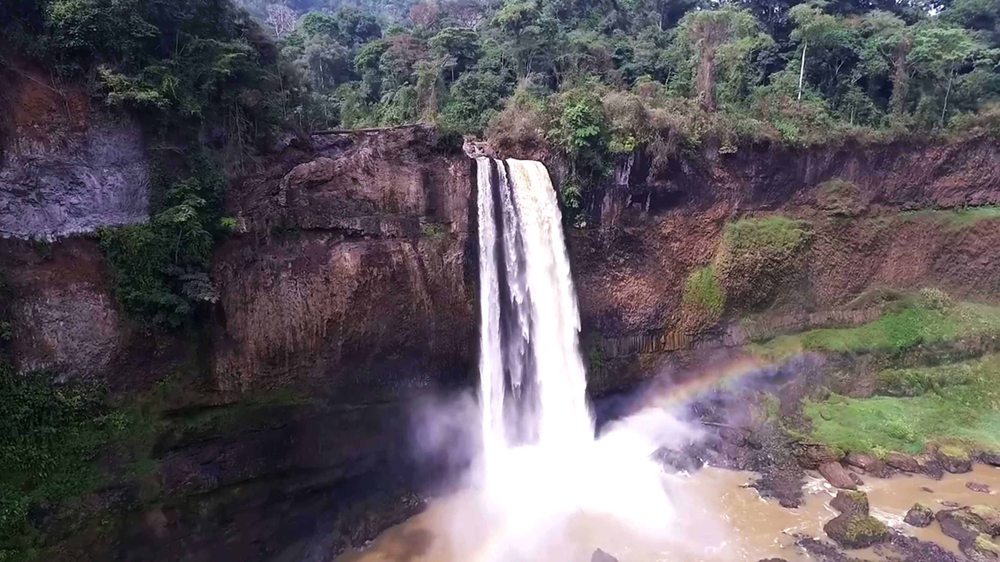
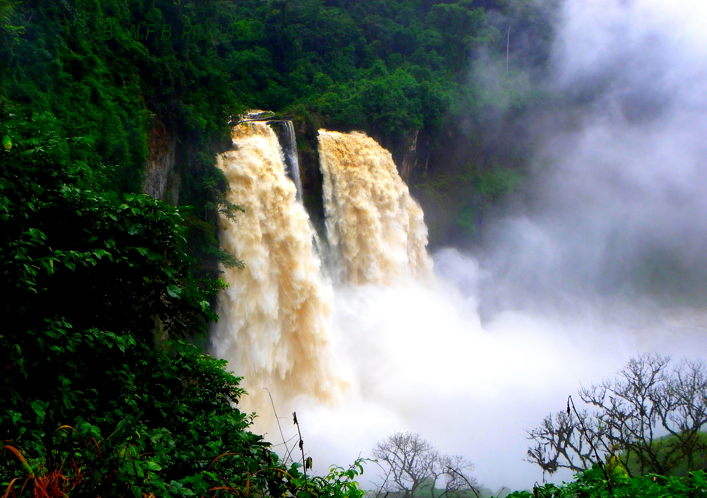
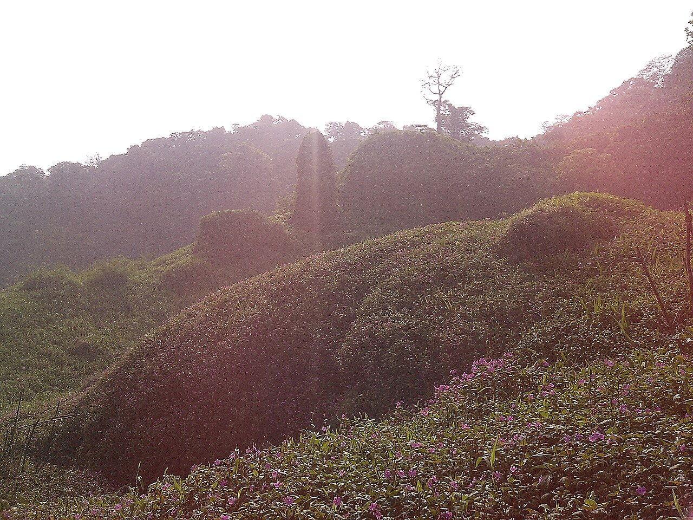
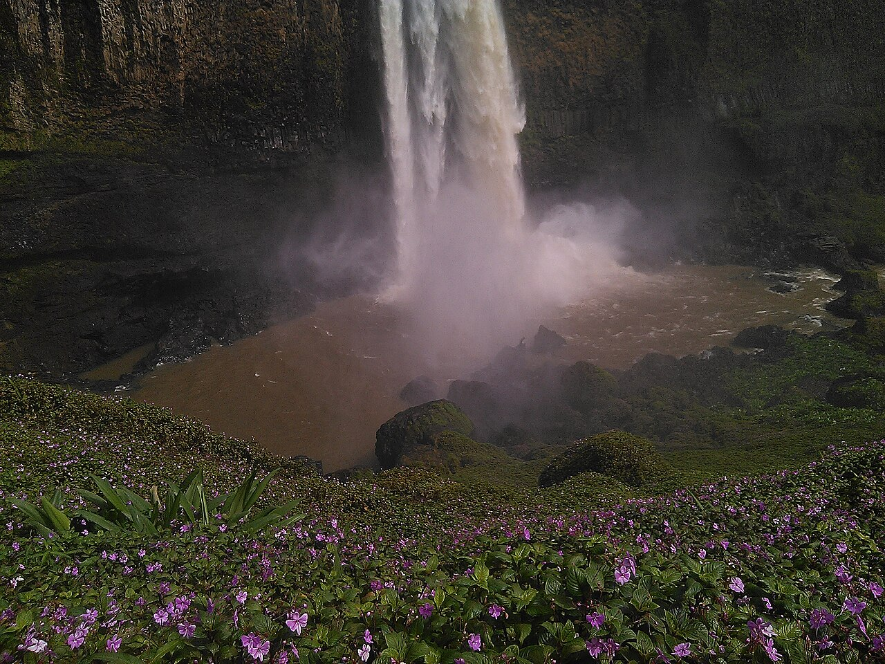
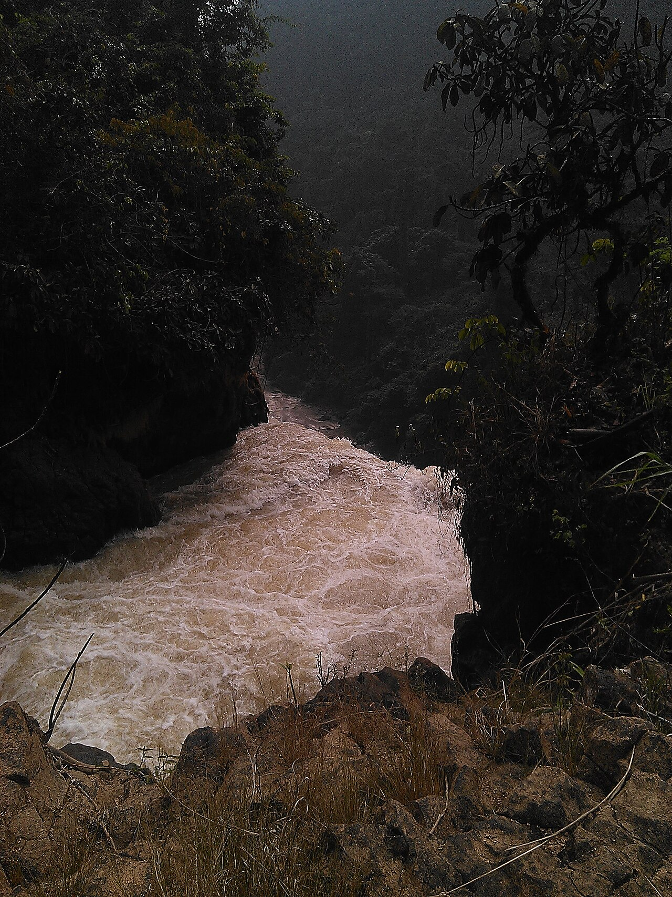
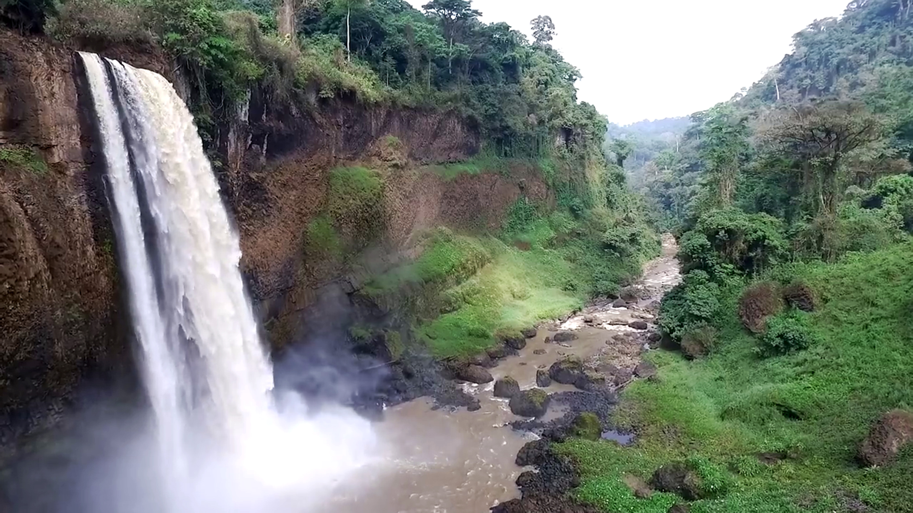
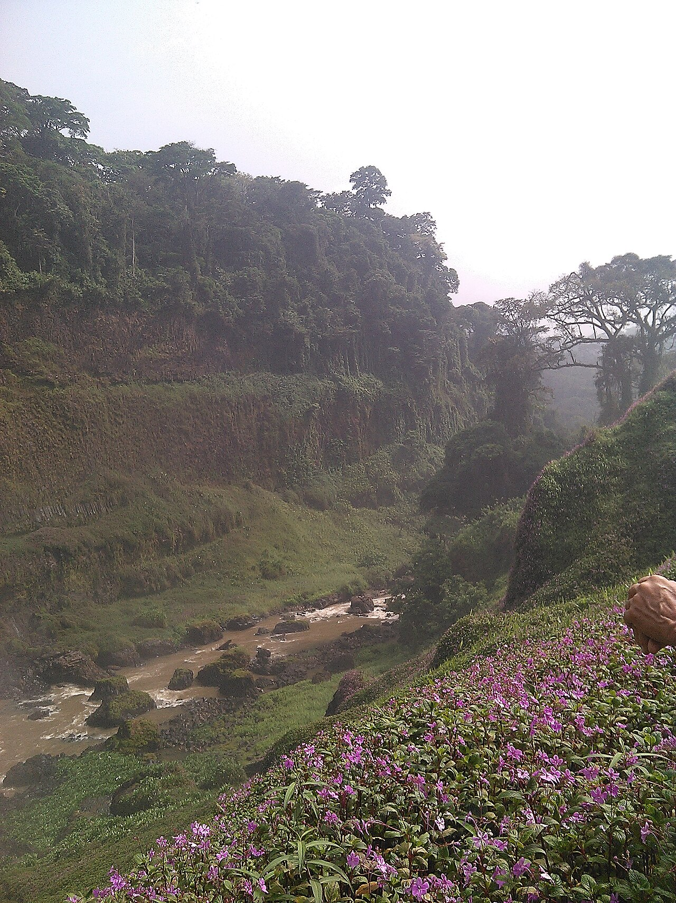
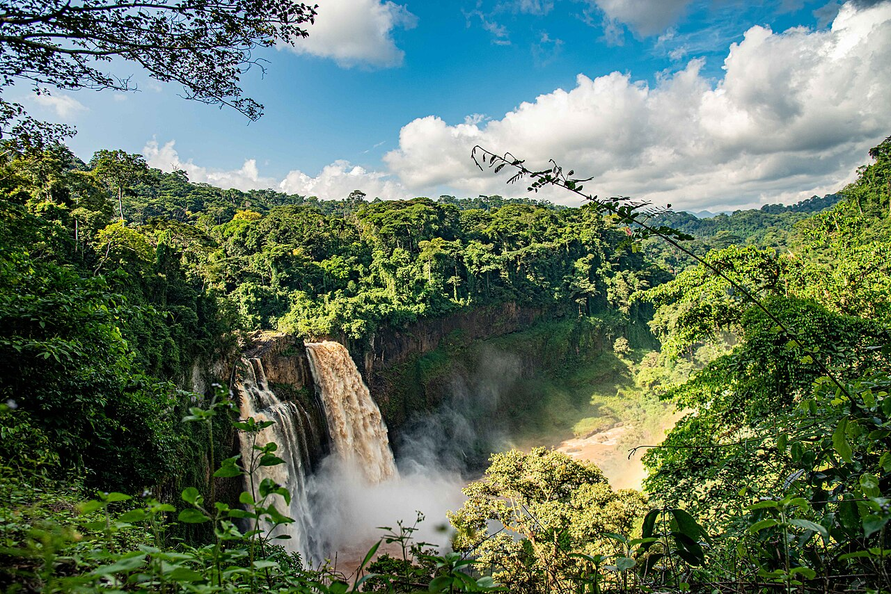
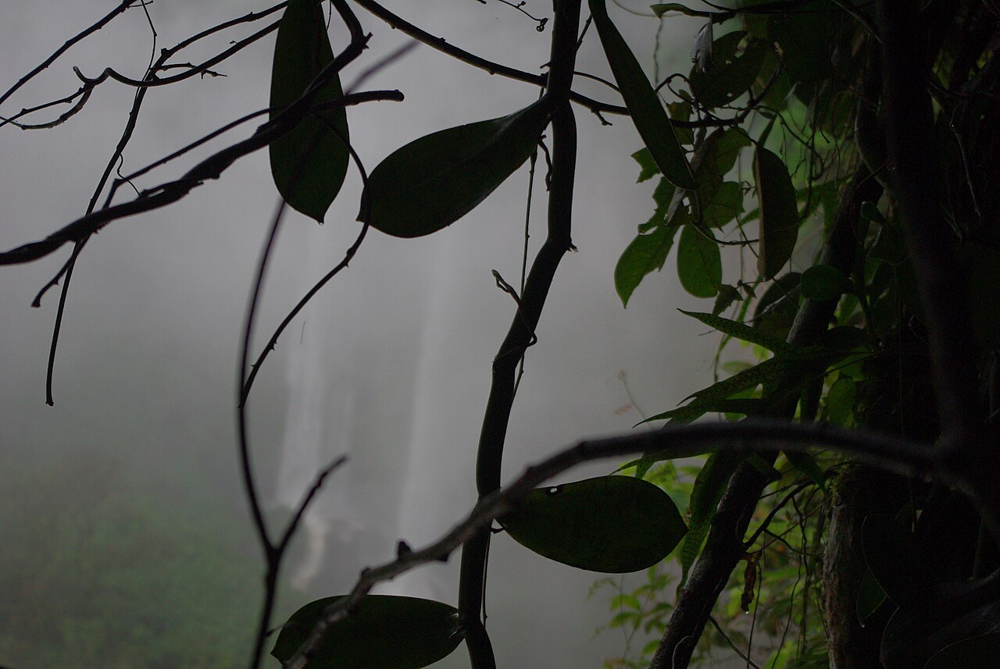
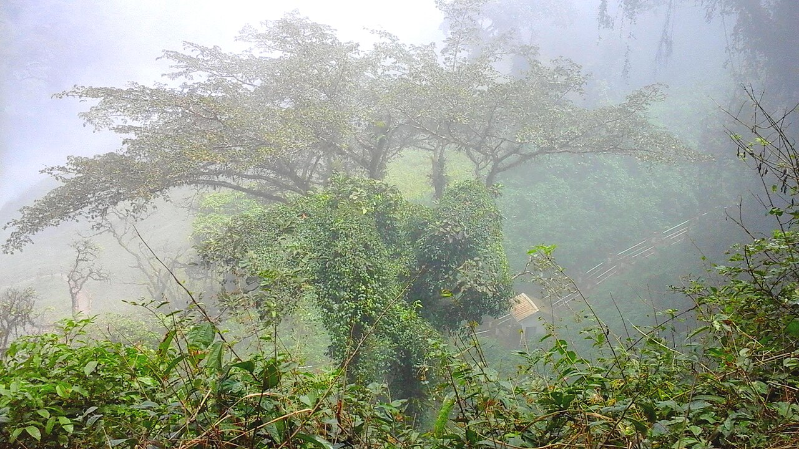

1971
Une trace bibliographique
Le dictionnaire ORSTOM du Mungo est cité pour Ekom-Nkam — référence indirecte dans cette recherche.

Bienvenue à
Les chutes du Nkam,
au cœur du village.
Un territoire à découvrir avec prudence :
histoire, paysages documentés et repères pour la visite.
01 / Histoire & territoire
Situer Ekom-Nkam
avant de le raconter.
Ekom-Nkam est un village de la commune de Baré-Bakem, dans le département du Moungo, région du Littoral. Les notices le relient au Dictionnaire des villages du Mungo (ORSTOM, 1971).
Sur place, les sources situent les chutes d’Ekom — ou chutes du Nkam — hautes d’environ 80 mètres. La date de fondation du village et l’étymologie locale du nom restent à recueillir auprès des habitants.
« Là où les racines du passé
nourrissent l’avenir. »Invitation éditoriale · pas une citation d’archive
1971
Le dictionnaire ORSTOM du Mungo est cité pour Ekom-Nkam — référence indirecte dans cette recherche.
1993—96
Créée par démembrement de Melong, opérationnelle à partir de 1996. Contexte communal, pas fondation du village.
2005
La notice rapporte 188 habitants pour Mboué et Ekom-Nkam ensemble — chiffre historique, pas population actuelle.
02 / Chutes & paysages
La chute du Nkam, la forêt riveraine, la mémoire du tournage : trois lectures documentées du même lieu. Les conditions de visite restent à confirmer sur place.

EKOM-NKAM / LES CHUTES DU NKAM
Dans le village, les sources situent une chute d’environ 80 mètres sur le fleuve Nkam. La fiche MINTOUL distingue parfois une chute « mâle » (Nkam) et une chute « femelle » (Oham). Débit, sécurité, tarifs et horaires : à vérifier avant de venir.

EKOM-NKAM / FORÊT RIVERAINE
Autour des chutes, la fiche MINTOUL décrit une forêt imposante et des aménagements — escaliers, garde-corps, boukarous, belvédère. Leur état actuel, comme celui des sentiers, doit être confirmé avant toute visite.

MÉMOIRE DU SITE / GREYSTOKE
Plusieurs sources associent les chutes au tournage de Greystoke / La légende de Tarzan (années 1980). C’est un souvenir du lieu, pas l’histoire du peuplement — ni une attraction certifiée sans confirmation locale.
02b / Lieux visitables
Plateformes, panorama et vallée : trois points de vue photographiés aux chutes d’Ekom-Nkam. L’accès se prépare : état de la piste, saison et autorisations locales à confirmer.



Accès souvent cité depuis Melong II (route N5), puis piste d’environ 9 km selon les sources — à vérifier selon la saison. Un accès ouest (Banwa / Mbieu) est parfois mentionné : il ne désigne pas le village d’Ekom-Nkam lui-même.
03 / Culture & vie locale
Les sources documentaires associent Ekom-Nkam au peuplement Baréko et, dans la fiche MINTOUL, au groupe Mbô. La culture vivante se dira avec les habitants — pas à leur place.
Baréko et Mbô sont des pistes documentaires, parfois divergentes selon les sources. Langues, auto-désignations et pratiques quotidiennes restent à recueillir localement, sans imposer une identité unique.
Récits, gestes et savoir-faire trouveront ici leur place uniquement avec l’accord des personnes qui les transmettent. Aucun rite, festival ou danse « typique » n’est inventé pour ce site.
UNE DÉMARCHE DE TRANSMISSION

04 / Saveurs & territoire
Autour d’Ekom-Nkam, les sources institutionnelles évoquent la forêt riveraine et la pêche villageoise. Aucun plat « emblématique » du village n’est établi ici : les images montrent les ressources du milieu. Les recettes se construiront avec les habitants.



Photographies Wikimedia Commons · site d’Ekom-Nkam. Ce ne sont pas des plats cuisinés.
Ces quatre produits sont des pistes de conversation culinaire, pas des spécialités établies d’Ekom-Nkam. Recettes et noms locaux : à documenter sur place.
05 / Hébergement & séjour
Le séjour se prépare
avant la route.
Selon la fiche MINTOUL, il n’y a pas d’hôtel dans le village d’Ekom-Nkam. Confirmez l’accueil, la piste et un hébergement auprès d’interlocuteurs locaux — ce site ne propose aucune réservation.
Abords du site d’Ekom-Nkam. Distinguez toujours le village, l’entrée des chutes et les villes d’étape du Moungo.
Repères uniquement — pas de disponibilité, tarif ni bouton « Réserver ». Vérifiez tout directement auprès d’un établissement ou d’un interlocuteur local.